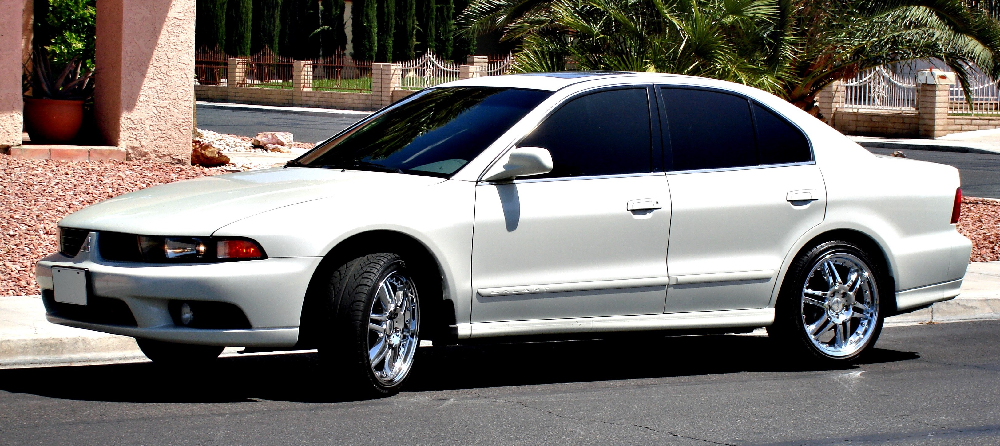
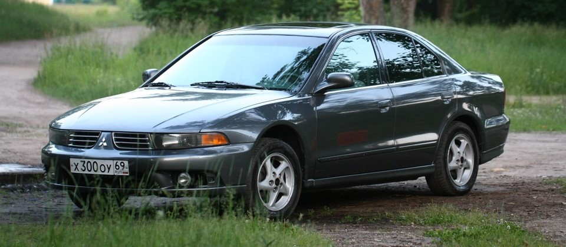
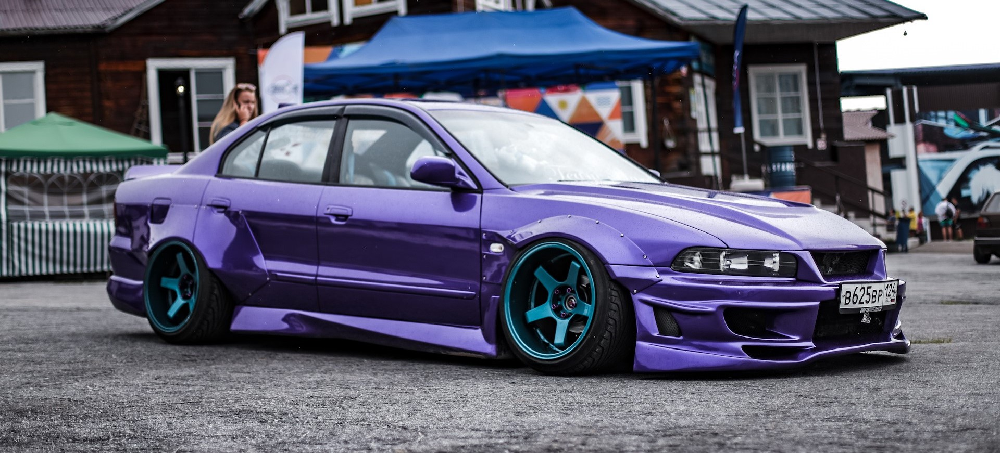

Mitsubishi Galant 8
Mitsubishi Galant — среднеразмерный автомобиль, выпускавшийся автомобильной фирмой Mitsubishi Motors с 1969 по 2012 год. Название произошло от французского слова фр. Galant, что означает «рыцарский». Создано девять различных поколений этой модели, суммарные продажи в настоящее время превышают пять миллионов машин. Модель стартовала как компактный седан, однако со временем превратилась в средне-размерный автомобиль. Первоначально производство было основано в Японии, но с 1994 года на американском рынке стали продаваться автомобили, собранные на заводе, ранее принадлежавшем Diamond-Star Motors (DSM) в штате Иллинойс.
После слабых продаж 7-го поколения (по сравнению с 6-м) концерн пересмотрел дизайн нового поколения Галанта, так в августе 1996 года появился «Галант» в восьмом поколении, отличающийся хищным, спортивным дизайном, напоминающим о успешном 6-м поколении. Внешний облик и направление контуров деталей кузова снискали этой модели прозвище «акула». Предлагался в кузовах седан и универсал. В Японии универсал продавался под брендом Mitsubishi Legnum. Galant вновь завоевал титул автомобиль года в Японии 1996—1997 года. VR-4 версия оснащена 2,5 л двигателем V6 с двумя турбокомпрессорами, развивающим 280 л.с. С 1996 года «Галанты» оснащались двигателями с системой непосредственного впрыска бензина GDI.
Так этот автомобиль выглядит у автолюбителей JDM, в рестайлинге и тюнинге
